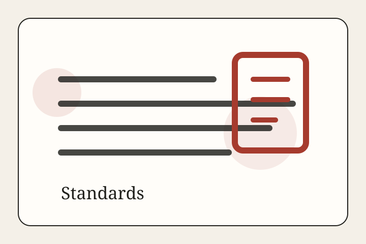

1. Sourcing
Stories are built from primary documents, official data, court records, public statements, research institutions, and accountable reporting. Major claims should point to visible source notes at the end of the piece.
Standards
Readers should be able to see what a story rests on: who wrote it, when it was published, what documents it cites, and how to challenge it.

Stories are built from primary documents, official data, court records, public statements, research institutions, and accountable reporting. Major claims should point to visible source notes at the end of the piece.
Core feature stories target 1,500 words or more so the site can explain systems and tradeoffs rather than post thin summaries.
Bystander language, photographs, data series, and quoted material should be credited. Staff bylines are visible and author pages list desk coverage.
Hero images should match the event, place, or institution under discussion. Each one is logged with creator, license, source file page, and why it is contextually relevant.
If a meaningful factual error is found, the story should be updated and the change noted in its corrections panel and the sitewide corrections page.
This prototype edition uses an AI-assisted editorial workflow. That makes transparency more important, not less: visible dates, source notes, and human review expectations are part of the product.
The Press aims for elegant, forceful, original prose. It can draw inspiration from the energy of great journalism without imitating living or historical writers sentence-for-sentence or copying signature phrasing.
Opinion pieces make arguments, but they still owe readers evidence. Reported features explain facts first and interpretation second.